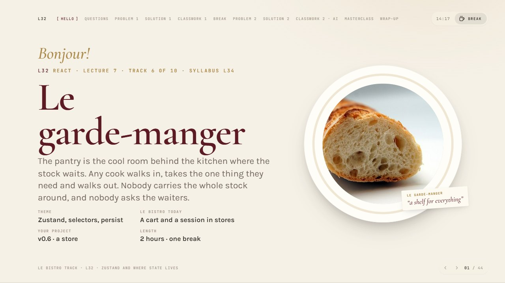
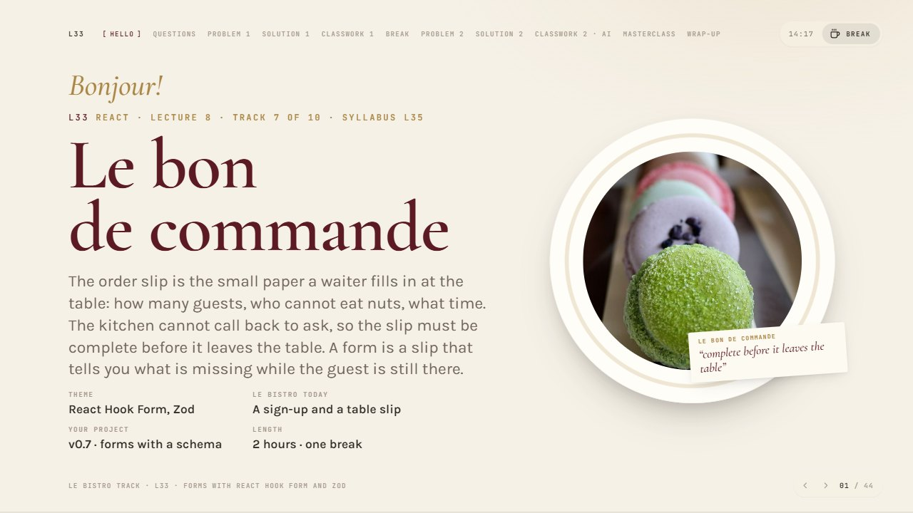
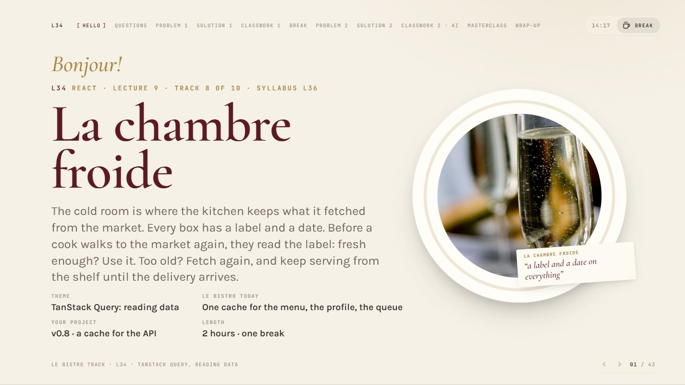
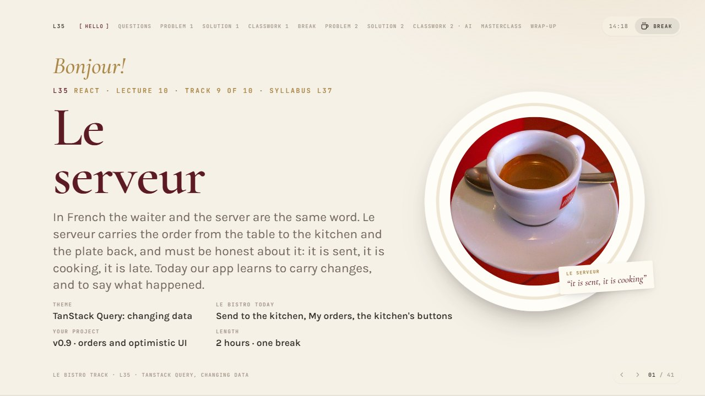
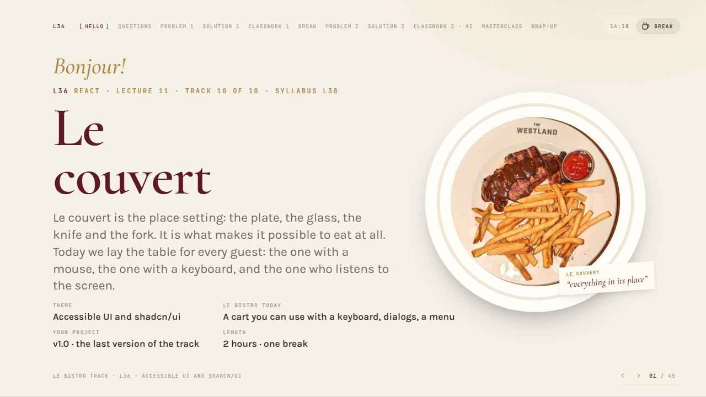
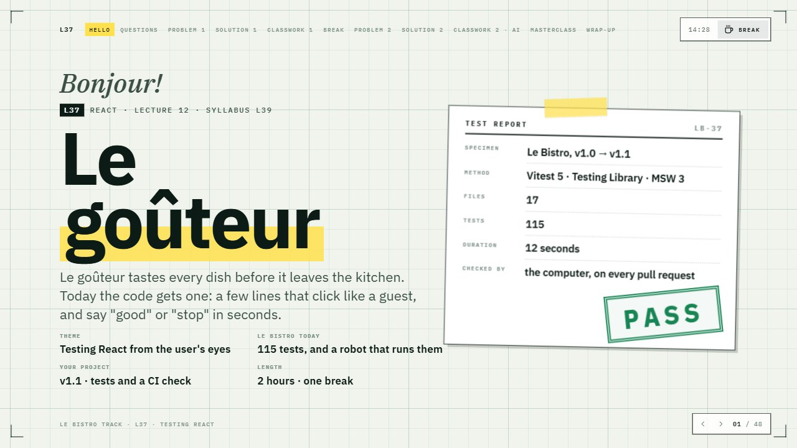
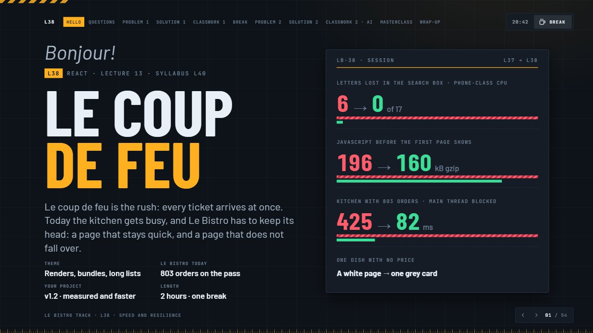

The first five · L27–L31 (syllabus L29–L33): from components to context


The second five · L32–L36 (syllabus L34–L38): from stores to accessible UI





The third five · L37– (syllabus L39–): tests, speed, security, the admin dashboard. Every deck has its own look

